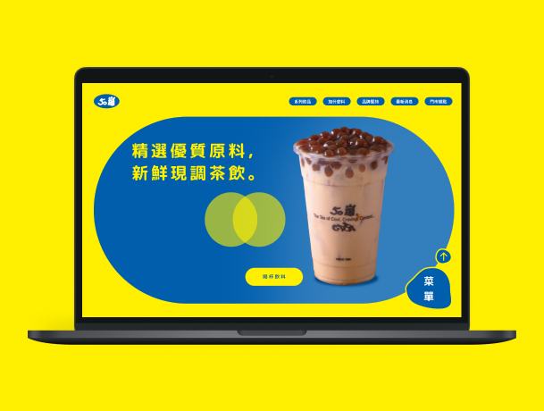

JrYuan
UI / UX Web Designer
大家好，我是智元，正在申請UI/UX設計師的職位。 我樂於發現問題的脈絡並提出解決，剛為了加強與工程師的協作能力而進修一陣子的css/html/js。
Projects
乾和糖炒栗子
UI & Web
十萬地藏經 一大光明藏
UX/UI & PM
乾和糖炒栗子
UI & Web

50嵐官網Redesign練習
UI & Prototype